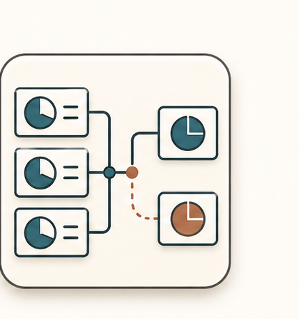
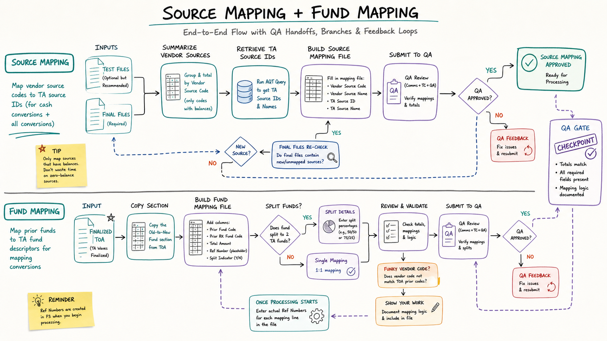

01
Copy the fund mapping section from the finalized TOA.
Fund mapping is used for mapping conversions. The TOA provides old-to-new fund relationships, but the working fund mapping file adds prior fund codes, amounts, ref numbers, and split-fund indicators.

Copy the fund mapping section from the finalized TOA.
Add the DC working header: prior fund code, total amount, ref number, and split indicator.
Fill Transamerica fund descriptor details from the TOA.
Document split funds with the correct allocation percentages.
Resolve mismatches where vendor fund codes do not line up cleanly with the TOA.
Send fund mapping to QA and update ref numbers when processing begins.
Fund mapping is only for mapping conversions, not cash conversions.
Some vendor fund codes require two-step explanation; show the work.
The mapping cannot be fully complete until ref numbers exist.
